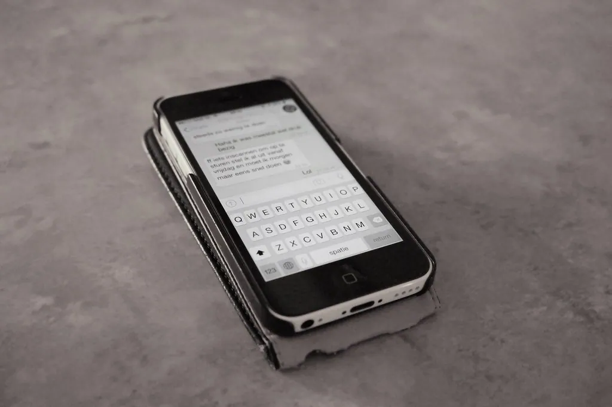

Scam Awareness
The schemes that target computer users follow a few predictable patterns. Learn to recognize each one and it loses its power — because slowing down is the scammer's worst enemy.

The Steady Mouse is an independent educational website and is not affiliated with, endorsed by, or sponsored by any company mentioned.
The fake tech-support scam
This is the scam this whole website exists to help you beat. Someone phones, emails, or shows a pop-up claiming your computer has a terrible problem, and offers to “fix” it — for a fee, or by taking control of your screen. It is always a lie.
Safety first: No honest company — not Microsoft, not your printer or internet company, and certainly not The Steady Mouse — will ever phone you out of the blue about your computer. If anyone does, hang up. It is a scam, every time.
Remember three things and this scam loses its power: real companies do not call you first, do not ask to control your screen, and do not demand unusual payment. If a contact does any of these, it is fake.
Why these scams work on sensible people
If you have ever wondered how intelligent, careful people get caught by scams, the answer is that scams do not attack intelligence — they attack emotion and timing. A scammer's whole craft is to put you in a feeling strong enough that clear thinking steps aside for a moment: fear that your money is at risk, panic that a grandchild is in trouble, or the flustered wish to make an alarming pop-up go away. In that moment, anyone can be rushed into a mistake.
This is worth understanding because it removes the shame, and shame is the scammer's best friend. People who feel foolish stay silent, and silence lets the fraud continue and spread. There is nothing foolish about being targeted by a professional deception designed to catch you on a bad day. The only mistake would be to stay quiet about it afterwards.
Knowing the trick also tells you the defense, and it is always the same: slow down. Scammers cannot survive a pause, because a pause lets the thinking mind catch up and the story fall apart. So whenever a message or call stirs up a strong feeling and a demand to act now, treat the urgency itself as the warning sign. Hang up, close the window, make a cup of tea, and check with someone you trust. That single calm habit defeats nearly every scam in this guide.
Fake pop-up warnings
Sometimes a frightening box fills the screen while you browse, claiming your computer is infected and telling you to call a number or click a button. This is a fake pop-up — a web page pretending to be a system warning. It cannot actually see your computer.
- Do not call any number and do not click any button inside the box.
- Close the browser tab or window using the × at the top.
- If it will not close, restart the computer from the Start menu.
- Afterwards, run a scan with the built-in Windows Security for reassurance.
Gift-card and payment demands
A sure sign of a scam is an unusual way to pay. No legitimate business, utility, or government office will ever ask you to settle a bill with gift cards, a wire transfer, or cryptocurrency. These are the scammer's favorite tools precisely because they are hard to trace and nearly impossible to refund.
| If you are asked to pay by… | What it means |
|---|---|
| Gift cards (read out the code) | Always a scam — stop immediately |
| Wire transfer to a stranger | Very likely a scam; money cannot be recalled |
| Cryptocurrency | A strong warning sign for everyday bills |
| A credit card on a site you typed yourself | Normal and reasonably safe |
The “family in trouble” call
In this cruel trick, a caller pretends to be a grandchild or relative in sudden trouble — an accident, an arrest — and begs for money right away, swearing you to secrecy. The urgency and secrecy are the giveaway.
- Pause. Do not send money or gift cards, however upsetting the call.
- Hang up and call your relative back on the number you already have for them.
- Check with another family member before doing anything.
Lottery, prize, and romance scams
Two more schemes deserve a mention because they prey on hope and on kindness.
A lottery or prize scam says you have won something — often one you never entered — but must pay a “fee” or “tax” to collect it. No genuine prize ever requires a payment to release it. If you must pay to win, it is a scam.
A romance scam builds a warm online friendship or courtship over weeks, then invents an emergency and asks for money. The signs are a person who always has a reason not to meet or video-call, and who eventually needs funds. Be cautious with anyone you have met only online who asks for money, however fond you have grown.
Safety first: A simple rule covers nearly all of these: never send money, gift cards, or personal details to someone you have not met in person and verified, no matter how urgent or heartfelt the request.
Protecting your accounts in advance
A few steps taken calmly today make you far harder to fool tomorrow.
- Turn on two-step verification for your email, so a code to your phone is needed as well as your password.
- Use a different, strong password for your email than for anything else.
- Keep Windows and your phone updated, which closes the gaps scammers exploit.
- Write your passwords in a notebook kept at home, never in an email or a note on the computer.
How to report a scam
Reporting helps the authorities track the people behind these schemes and protects others who might be targeted next. It is quick, free, and you do not need to have lost any money to make a report — a scam attempt is worth reporting too.
- Report to the U.S. Federal Trade Commission at reportfraud.ftc.gov.
- If you lost money through a bank or card, telephone your bank using the number on your card right away.
- Change the password on any account you think was exposed, starting with your email.
- Tell a trusted friend or family member — scammers rely on silence.
A small glossary of safety words
Knowing the words makes you harder to fool, because a scam that has to explain itself in plain terms usually falls apart.
- Phishing — a fake message pretending to be a real company, to steal passwords or payment.
- Pop-up — a box that appears over a web page; a fake one may imitate a warning.
- Remote access — letting someone else control your screen from afar; never grant this to an unexpected caller.
- Two-step verification — a second check, usually a code to your phone, that protects an account even if your password leaks.
If it has already happened to you
If you have been caught by a scam, please read this gently: you are in very good company, it was not your fault, and acting now matters far more than looking back. These schemes fool thousands of sensible people every year precisely because they are the work of practised criminals. The useful thing is not to blame yourself but to take a few calm steps.
If you gave away card or bank details, telephone your bank straight away using the number on the back of your card, and tell them what happened — they deal with this every day and can often act quickly. Change the password on any account you think was exposed, beginning with your email, since that one protects the others. If someone was given remote access to your computer, disconnect it from the internet, restart it, and run a scan with Windows Security; if you remain worried, a trusted local shop can check it over.
Then report it, both to help yourself and to protect others, at the Federal Trade Commission's site below. And please tell someone — a family member or a friend. Scammers count on embarrassment to keep their victims silent, and the moment you speak up, you take that power away from them — and very often help the next person avoid the same trap. Keep this guide handy, and when something feels wrong, trust that feeling. Slowing down is the scammer's worst enemy and your best protection.